WAIS - THINK IN COLORS
WAIS is a guided ideation tool designed to help teams think with clarity and psychological safety. By combining structured thinking modes with anonymity and authentic summaries, WAIS reimagines how groups brainstorm — with structure, empathy, and creative freedom.
ROLE
UX Designer & Illustrator
TIMELINE
2025
TOOLS
Figma, Lottie, Miro

MY ROLE
Throughout the project, I focused mainly on experience design while collaborating closely with the rest of the team.
My contributions included:
- conducting user interviews and synthesizing insights
- defining problem framing and concept direction
- facilitating feature ideation
- creating user flows, wireframes, and prototypes
- designing onboarding, dashboard, and color rounds
- developing visual identity, illustrations, and tone
- writing UX copy and guidance
- collaborating on design token implementation
- assisting with UI implementation and Lottie animations
HOW IT BEGINS
During my time at the Apple Developer Academy, ideation was part of our everyday work. Across six different project challenges and frequently changing teammates, discussions became the backbone of how we aligned, generated ideas, and made decisions together. While we initially explored topics like posture and doomscrolling, both revealed limitations early on and felt disconnected from the problems we faced most often.
What resonated more deeply was brainstorming itself. It was something we struggled with daily and knew would remain relevant in our future careers in tech and design. Instead of forcing a direction, we framed early research questions around how teams generate ideas, facilitate discussions, and where ideation tends to break down.
Early guiding questions used to explore real pain points in team ideation

UNDERSTANDING THE FRICTION IN TEAM BRAINSTORMING
Our guiding questions shaped interviews with people inside and outside the Academy, including architects, DevOps engineers, QA, R&D, and other creative roles. Despite different backgrounds, the same frustrations surfaced repeatedly. Brainstorming sessions were often described as unclear and exhausting—discussions drifted without shared goals, ideas and critiques mixed too early, and emotional dynamics influenced outcomes. Dominant voices tended to lead, while quieter members held back despite valuable input.
Many interviewees said building on others' ideas felt positive but difficult in practice. Although some knew ideation principles like Osborn's rules, most struggled to apply them consistently during real discussions. This gap between understanding the rules and practicing them became a recurring problem.
From these insights, we realized that teams didn't lack ideas, instead they lacked environments that supported shared thinking. Teams needed both focus and psychological safety to speak openly. When discussions were too open, people felt lost; when too rigid, they felt constrained. The core challenge was balancing clarity with openness in team ideation.
Common issues during team ideation process
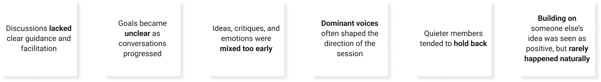
Problem framing and refinement
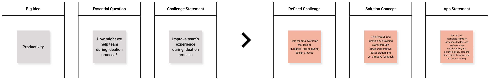
THE CONCEPT BEHIND WAIS
WAIS was designed as a space for teams to think together more intentionally. Instead of asking participants to do everything at once, it separates thinking into focused moments.
The experience uses perspective lenses, shown as color rounds, where each round invites teams to view the same topic from a specific angle, from observing facts, raising concerns, expressing feelings, to building possibilities. This structure helps teams slow down, align their thinking, and avoid premature judgment.
Anonymity is central to the experience. Ideas are shared without names, reducing bias, social pressure, and fear of being wrong, so participants can focus on the ideas themselves. Session summaries are generated only from participants' actual input, preserving the team's original voice without added assumptions.
Refined app value
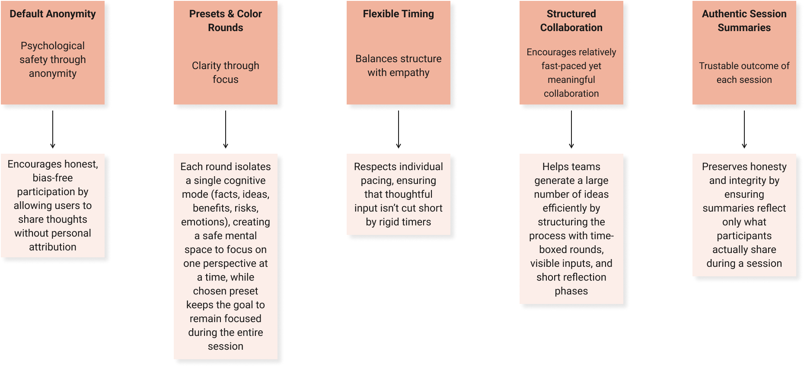
INTRODUCING THE COLOR ROUNDS
Each color round acts as a gentle guide rather than a strict rule. Instead of telling users what to say, the app helps them understand how to think at that moment.
The wording for each round was carefully chosen to feel inviting rather than instructional. We avoided rigid or academic language, opting instead for simple prompts that reduce hesitation and help users get started.
To support this, we introduced characters and illustrations that reflect the personality of each round. These visuals help users quickly grasp the intent of a round and make the experience feel more approachable.
Instruction cards for color rounds
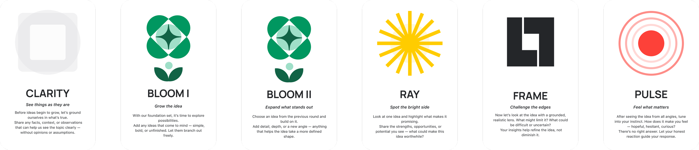
DESIGN EXPLORATION AND ITERATION
The design of WAIS went through several iterations. Early lo-fi sketches explored how much structure was needed to guide users without overwhelming them. Some versions were too rigid, while others felt too open and confusing.
Through testing and internal reviews, we gradually refined the flow. We adjusted the order of rounds, simplified instructions, and reduced visual noise to keep attention on writing and thinking.
Wireframes helped us focus on hierarchy, pacing, and transitions between rounds. These iterations shaped how users enter a session, contribute ideas, and reflect on outcomes.
Lo-fi exploration V1
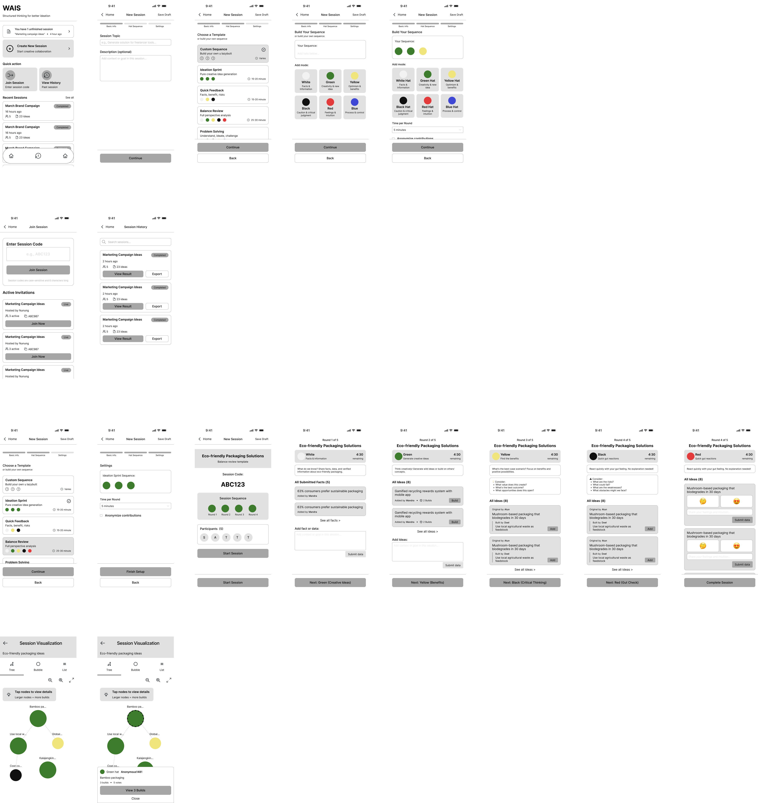
Lo-fi exploration V2

VISUAL IDENTITY AND MOTION
The visual identity of WAIS was designed to feel calm, neutral, and non-intimidating. Color choices were softened to reduce pressure and support longer writing sessions. Spacing and typography were adjusted to prioritize readability and focus.
Illustrations and animations were introduced to make transitions between rounds feel smooth and intentional. Motion was kept subtle, helping guide attention without distracting from content. Lottie animations were used sparingly to reinforce changes in state and to give the app a sense of continuity.

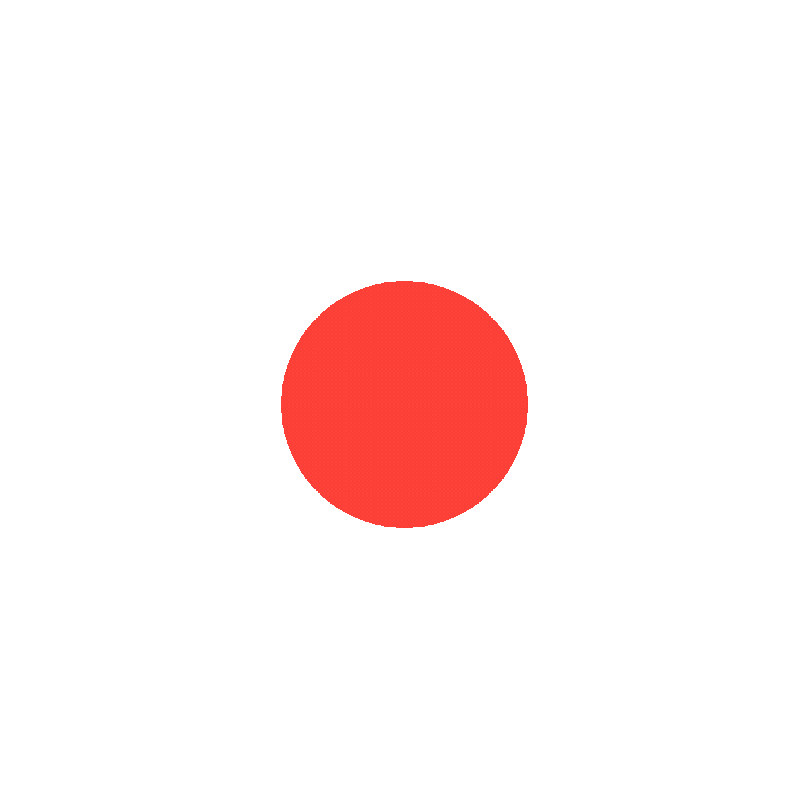
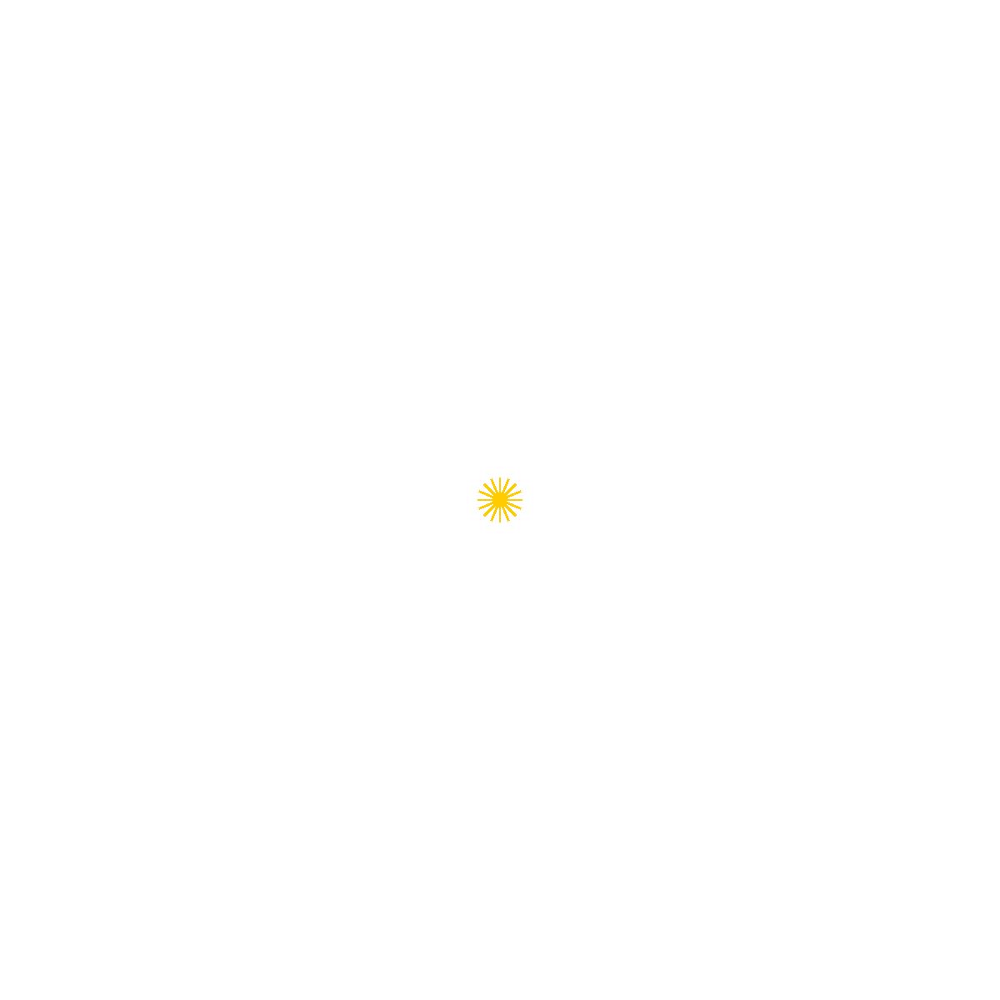
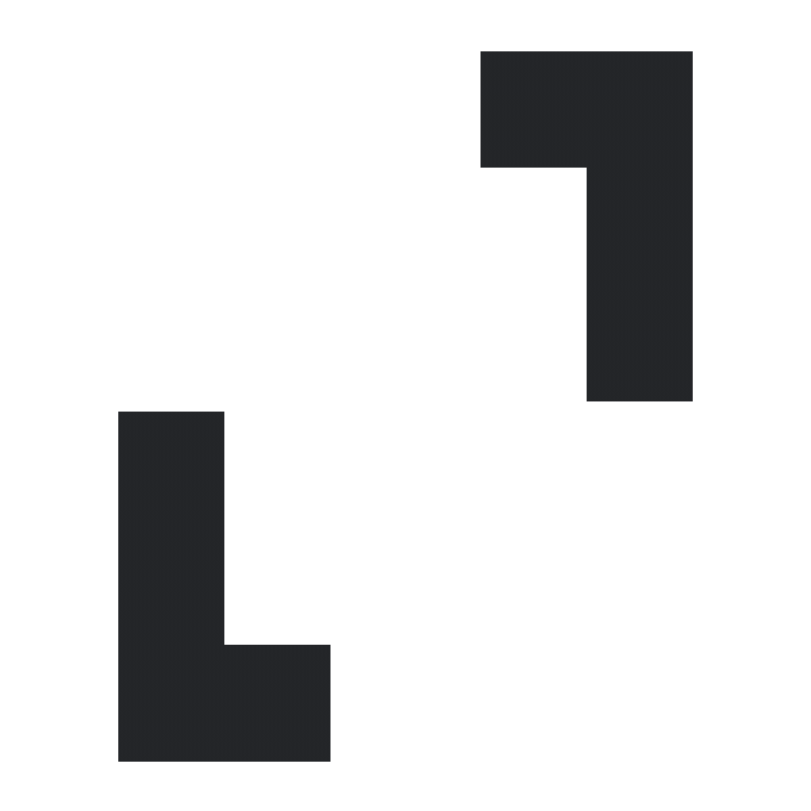
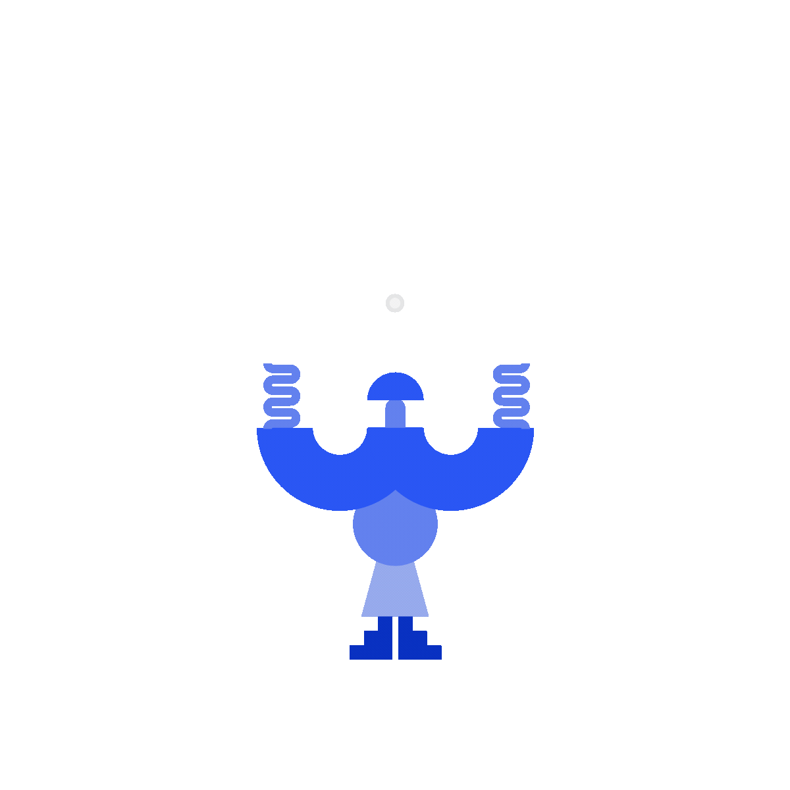
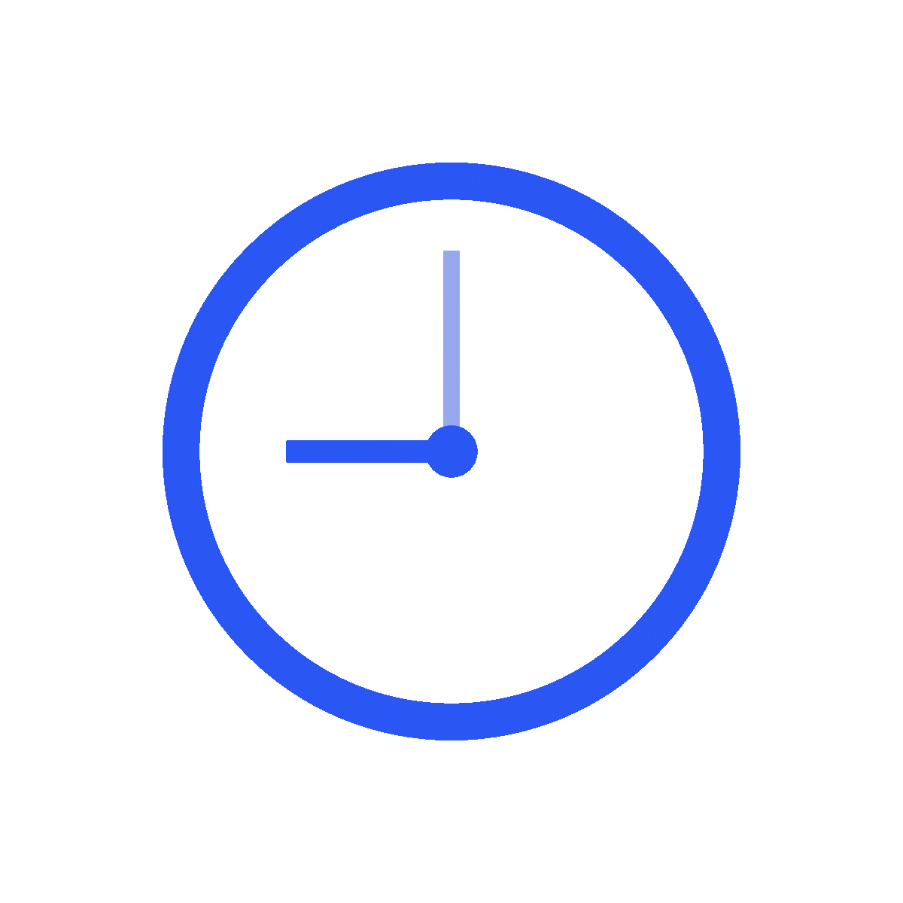
HOW THE DESIGN EVOLVED
Several key decisions shaped the final product. Anonymity became non-optional after users shared that optional anonymity still made them hesitant. Early instructional flows were softened into more conversational guidance. The color system was refined to be more intuitive, supported by clearer copy and visuals.
These changes helped WAIS feel less like a tool that tells users what to do, and more like a space that supports how people naturally think and collaborate.
Hi-fi iteration v1

Hi-fi iteration v2

VALIDATION
We tested WAIS with around six to ten users from different professional backgrounds, including software engineers, QA, and designers. Feedback highlighted how the structure changed the tone of discussions and made participation feel more balanced.
Some users shared that the experience helped them see discussions differently, and that it made brainstorming feel more focused and efficient.
REFLECTION AND FUTURE PLAN
WAIS is an active, ongoing project released on the App Store on January 27, 2026. Alongside continued product development, we are applying WAIS to the Apple Developer Academy's entrepreneurship program to explore its potential not only as a product, but also as a business, with guidance from industry experts and access to early-stage funding.
On the product side, we are refining both technical and design aspects, including expanding ideation presets, introducing user accounts, improving summarization, and strengthening the model that supports session flow. Rather than treating WAIS as finished, we see it as a system that evolves through continuous testing and iteration, shaped by real team usage while staying true to its core values of clarity, safety, and honesty in collaboration.